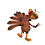

As requested, I have made a Spot the Difference competition for you all to have a go at!
The 1st picture is the original and the 2nd has been changed in some ways!!
Can you find all the differences 1st?? There's quite a lot!!


The 1st to comment all the differences together in 1 comment will win a nice prize :))
Remember if you think you have found them all and comment them, then you find
another, you have to write the whole list out again, I will only take complete lists as
answers. ^_^
Good luck :)
UPDATED: NEWY82 WAS THE 1ST TO FIND ALL THE DIFFERENCES
WELL DONE NEWY, YOU WIN A RED ROSETTE :))
This is all the differences, Newy circled them http://i49.tinypic.com/2ptasya.jpg
Jessie

-2.jpg)


108 comments:
cool!
hey! fun contest! here are the differences i found
the "-" was removed from blue chat bubble
Jessie was added
blue dog added
halloween pumpkin chobot added
mouth removed from tvhead188
sqaure removed from the robot
builder guy's mask
circle on chat bar is now yellow
the remove button on mcfreddys player card is changed to add
a blue dot was added to the robot teams builder :)
an eye was removed from middle robot on team scores
mcfreddys age was changed
a line was removed from robot wardrobe
tvhead was changed to agent status
a leaf was removed from blue tree
polka-dot filled in on the gate
a line was removed from gate
I found!!!
http://es.tinypic.com/view.php?pic=ka64u8&s=6
Jeff1
Here is the image with all differnces circled :
http://i48.tinypic.com/yfeid.jpg
the "-" was removed from blue chat bubble
Jessie was added
blue dog added
halloween pumpkin chobot added
mouth removed from tvhead188
sqaure removed from the robot
builder guy's mask
circle on chat bar is now yellow
the remove button on mcfreddys player card is changed to add
a blue dot was added to the robot teams builder :)
an eye was removed from middle robot on team scores
mcfreddys age was changed
a line was removed from robot wardrobe
tvhead was changed to agent status
a leaf was removed from blue tree
polka-dot filled in on the gate
a line was removed from gate
hey! fun contest! here are the differences i found:
UPDATE- I FOUND SOME MORE
the "-" was removed from blue chat bubble
Jessie was added
blue dog added
halloween pumpkin chobot added
mouth removed from tvhead188
sqaure removed from the robot
builder guy's mask
circle on chat bar is now yellow
the remove button on mcfreddys player card is changed to add
a blue dot was added to the robot teams builder :)
an eye was removed from middle robot on team scores
mcfreddys age was changed
a line was removed from robot wardrobe
tvhead was changed to agent status
a leaf was removed from blue tree
polka-dot filled in on the gate
a line was removed from gate
dot removed from the floor
the ball on the chobots hat was changed to red
a line was removed from tvhead's hoverboard
flower was removed from the little bowl
the b was removed from block
line was removed from citizen passport
? mark removed from corner button
little dot removed from the green in top right
mask was added to ninja chobot
There are 21 diffrentcs
iupdates : here is the newer image with all differences circled :)
http://i49.tinypic.com/2ptasya.jpg
i wrote all diffetences and my modzila crashed!:'(((
1.part of tree is missing 2.on the robot top teams the green robots eye is missing 3.create your own team hole is missing 4.part of the flower is missing 5. mc freddys plus was changed to - 6.dot is missing on grass 7.line on tvheads board is missing 8.line on report button gone 9.missing line on mc freddys citizen card 10. enginers hole is missing 11.3 people are missing 12. dragon mask was put on ninja 13. tvheads mouth is missing 14.b is missing in block 15.chat history button is changed from green to yellow 16.behind the top robots thers no hole 17. line is missing under tv heads profile 18.mc freddys age is changed 19.question mark is missing 20.clour changed on pom pom from blue to red -bloom1
in mcfreddy's age, one says 398 and one says 328
in 2nd pic tvhead has an agent badge
when mcfreddy says "takes pie back" one of the pictures doesnt have a "-"
2nd pic, tvhead doesnt have a mouth.
the dot on the chat bar was changed to yellow :))
a pumpkin agent was added ( lol)
the robot on the sign is missing an eye :))
in 2nd pic mcfreddy isnt your friend
in 2nd pic, the little star thing on top of the team creator is filled in
a line is missing from mcfreddys citizen card
a pic of you was added to the 1st pic
in the 2nd pic, the "b" from block was removed
the ? from the ? button was removed in the 2nd pic
there was a blue chobot with a dog mask added
there is a leaf missing from the tree ;)
the ninja in one pic has a dragon mask
thats all, i think :))
~yolande
1.dragon with ninja suit
2.pumpkin with sombrero
3.jessie
4.tvhead not an agent
5.mcfreddy is 398 in 1 and 328
6.robots star and robots gear
7.blue dog
8.mcfreddy says -takes pie back and in another he says takes pie back
9. hole in builder's mask is gone.
i hope i win :D
wait update there are 24 diffrentces
hey! fun contest! here are the differences i found:
UPDATE found 1 more difference :)
the "-" was removed from blue chat bubble
Jessie was added
blue dog added
halloween pumpkin chobot added
mouth removed from tvhead188
sqaure removed from the robot
builder guy's mask
circle on chat bar is now yellow
the remove button on mcfreddys player card is changed to add
a blue dot was added to the robot teams builder :)
an eye was removed from middle robot on team scores
mcfreddys age was changed
a line was removed from robot wardrobe
tvhead was changed to agent status
a leaf was removed from blue tree
polka-dot filled in on the gate
a line was removed from gate
dot removed from the floor
the ball on the chobots hat was changed to red
a line was removed from tvhead's hoverboard
flower was removed from the little bowl
the b was removed from block
line was removed from citizen passport
? mark removed from corner button
little dot removed from the green in top right
mask was added to ninja chobot
the report button on tvheads card had a line removed
1.part of tree is missing 2.on the robot top teams the green robots eye is missing 3.create your own team hole is missing 4.part of the flower is missing 5. mc freddys plus was changed to - 6.dot is missing on grass 7.line on tvheads board is missing 8.line on report button gone 9.missing line on mc freddys citizen card 10. enginers hole is missing 11.3 people are missing 12. dragon mask was put on ninja 13. tvheads mouth is missing 14.b is missing in block 15.chat history button is changed from green to yellow 16.behind the top robots thers no hole 17. line is missing under tv heads profile 18.mc freddys age is changed 19.question mark is missing 20.clour changed on pom pom from blue to red 21.- is missing from sentance (p.s sorry forgot 1) -bloom1
mcfreddy is older in one pic
He is added in one pic
He has - at the begging of his speech
Tvhead188 mouth removed :S
1. Pumpkin Agent
2. BLue dog
3. The girl
4. Start on the team flag
5. The question mark on the red circle
6. McFreddy saying "takes pie back" without the "-"
7. The add button
8. Age changing from 398 to 328
9. tv's Agent Badge
10. Tv's Smile
11.4 people reappears
12. The square on the guys head
13. Ninja mask
1. jessie appears
2.mcfreddy has turned 328 days old
3. tv head has an agent badge on his playercard
4.The "b" in the word block has dissappeared
5.The guy in the ninja outfit has a dragon mask put on in the second pic
6.tv heads mouth dissappeared
7.the - from mcfreddy saying -takes pie back dissapeared
8.The circle hole on top of the robot create a team stand is filled in
9.one of the eyes from the robot team rate stand has gone from the face in the middle.
10.The chobot in the pumpkin mask has gone
11.the chobot satnding next to the chobot in the pumpkin mask has gone aswell.
thats all ive got so far
thnx for reading:D
~mctothemax~
1. jessie appears
2.mcfreddy has turned 328 days old
3. tv head has an agent badge on his playercard
4.The "b" in the word block has dissappeared
5.The guy in the ninja outfit has a dragon mask put on in the second pic
6.tv heads mouth dissappeared
7.the - from mcfreddy saying -takes pie back dissapeared
8.The circle hole on top of the robot create a team stand is filled in
9.one of the eyes from the robot team rate stand has gone from the face in the middle.
10.The chobot in the pumpkin mask has gone
11.the chobot satnding next to the chobot in the pumpkin mask has gone aswell
12.The remove button has turned into an add button on mcfreddy's playercard
Thats all for now::))
~mctothemax~
http://3.bp.blogspot.com/_-9CeYpuZ34k/S13XW6bYyyI/AAAAAAAAAFM/66HDSJGkXQk/s1600-h/spot.jpg
here is the pic
~meme1999~
The - is removed
there is a hallowen chobot
tvhead is a agent
dog chobot added
ninja has dragon mask
You (jessie) are in the picture
one chobot says lock while he has to say block
mcfreddy's age is changed
circle on chat bar is yellow
tv head doesnt have a mouth
two cirlcle's on the ground are missing
a line on tvhead's board is missing
a leaf was removed from the blue tree
there is something on tvheads's report button
one line on the gate thing is missing
the chobot with the red hat has one blue and one RED circle on the hat
one circle outside the robot arena is missing
mcfreddy is removed from friends
there has to be hole on that thing on top of team creator
one leaf is removed from the plant next to the robot guy
one circle of the gate is gone (the one next to the score board)
one of the eyes on the robot drawing on team score board is gone
mcfreddy has 2 lines on citizen card
WE HAVE TO WRITE THE DIFFERENCE's
in mcfreddy's age, one says 398 and one says 328
in 2nd pic tvhead has an agent badge
when mcfreddy says "takes pie back" one of the pictures doesnt have a "-"
2nd pic, tvhead doesnt have a mouth.
the dot on the chat bar was changed to yellow :))
a pumpkin agent was added ( lol)
the robot on the sign is missing an eye :))
in 2nd pic mcfreddy isnt your friend
in 2nd pic, the little star thing on top of the team creator is filled in
a line is missing from mcfreddys citizen card
a pic of you was added to the 1st pic
in the 2nd pic, the "b" from block was removed
the ? from the ? button was removed in the 2nd pic
there was a blue chobot with a dog mask added
there is a leaf missing from the tree ;)
the ninja in one pic has a dragon mask
thats all i think ~paulyte2009~
ok i found alot
mcfreddy not added
other 1 not agent
no pumpkin
no one that look like jessie
no blue dog
no dragon mask
no question mark on help button
mask removed
circle chat bar yellow
blue dot on builder
eye removed from robot sign
blue chat bubble jessie was added
line missing on tvhead hoverboard
line on robot wardrobe removed
mouth removed on tvhead
That all i found ill look see if there is more :)
hi this is wat i found the"_" from the chat bubble jessie was added also
blue dog added and pumpkin guy added 2
mouth removed from tvhead 188
square moveded from the robot builders guys mask
circle on chat box not yellow
the remove button on mcfreddys card
has changed to add#
a blue dot added to robt team builder
an eye was removed from middle robot on team scores
mcfreddys name was changed
i line was removed from robot warddrobe
tvhead changed to agent status
leaf removed from blue tree
polka dot filled in on gate
a line was removed from gate
dot removed from floor
ball on hat change dto red
line not on tvheads hoverboard
flower removed from the little bowl
b not in the word block
line removed from citizen paassport
? mark removed from help button
little dot removed from the green in the top right corner
mask added to ninja chobot
report buttton on tvheads card has aline removed
1.There is a leaf missing in the tree on the left.
2.On tvhead188 picture the agent badge is missing.
3.on tvhead188 picture the mouth is missing.
4.On tvhead188 picture a line is missing on the hoverboard.
5.The robot wardrobe a line is missing.
6.on tvhead188 picture a thing is missing in the report button.
7.Next to the emotions button the middle line is missing.
8.When you want to see the chat history, that button has changed color.
9.on mcfreddy picture, a line on the citizen card is missing.
10.On mcfreddy pic. the report button has turned into a add buddy button.
11.on mcfreddy pic. the age has changed.
12.On the chat bubble: -takes pie back the - is missing.
13.on the chat bubble: block, the letter b is missing.
14.You have added a dragon mask to the ninja guys.
15.you have added a hallowen guy with a hoverboard on the pic.
16.you have added a dog on the pic.
17.the girl with the umbrella has changed color on one of her balls on the hat.
18.next to the robot wardrobe the is a little plant. a leaf is missing also there.
19.you have added a jessie on the pic, that is almost next to the chat bubble:-takes pie back.
20.on the mechanic guys hat there is a hole that is missing.
21.on the pic. with the top hundred robots team, the green robot is missing its eye.
22.on the pic. with the robots on the right there is hole missing on the top.
23.the question mark is missing on the right.
24.on the gras to the right there is round thing missing.
25.on the top hundred robots, somebody has painted in the hole on top.
26.over jessie, on the ground, a round thing is missing.
27.over the chat history button, on the ground, there is also missing a round thing.
That is all i could find, Hope i win.
-Aneelio
ATTENTIONEVERYONE ^.^
Tomorrow (26. January) Come to my Age 400 party ^_^
Place: Cafe (in it)
Time: 14:00 chobots time
Server: maybe vanilla ;)
Hope to see ya there ;)
P.s. i think a mod will come X_x
Wow fun contest! Here are the things i cicrcled!http://i440.photobucket.com/albums/qq128/Skipskipson/chobotsdiff1.jpg
Goodluck!
-crust-
WAIT I WILL START OVER
? mark removed from help button
The - is removed
there is a hallowen chobot
tvhead is a agent
dog chobot added
ninja has dragon mask
You (jessie) are in the picture
one chobot says lock while he has to say block
mcfreddy's age is changed
circle on chat bar is yellow
tv head doesnt have a mouth
two cirlcle's on the ground are missing
a line on tvhead's board is missing
a leaf was removed from the blue tree
there is something on tvheads's report button
one line on the gate thing is missing
the chobot with the red hat has one blue and one RED circle on the hat
one circle outside the robot arena is missing
mcfreddy is removed from friends
there has to be hole on that thing on top of team creator
one leaf is removed from the plant next to the robot guy
one circle of the gate is gone (the one next to the score board)
one of the eyes on the robot drawing on team score board is gone
mcfreddy has 2 lines on citizen card
1. jessie appears
2.mcfreddy has turned 328 days old
3. tv head has an agent badge on his playercard
4.The "b" in the word block has dissappeared
5.The guy in the ninja outfit has a dragon mask put on in the second pic
6.tv heads mouth dissappeared
7.the - from mcfreddy saying -takes pie back dissapeared
8.The circle hole on top of the robot create a team stand is filled in
9.one of the eyes from the robot team rate stand has gone from the face in the middle.
10.The chobot in the pumpkin mask has gone
11.the chobot satnding next to the chobot in the pumpkin mask has gone aswell
12.The remove button has turned into an add button on mcfreddy's playercard
13.the chat history button has turned yellow.
i just know i havent got ll of them lol:D
well good luck other cho's
Here is the picture i made to show the differences i found. (its a picture of the edited one) Overall i found 15 changes.
http://4.bp.blogspot.com/_CU4U-SUuSaY/S133JvpmFFI/AAAAAAAAAeM/L639y62G7g4/s1600-h/PAINT.PNG
-Antguy815
1: Jessie was added
2: mc Freddy age changes
3: tv head was a agent then not
4: mc Freddy added then not added
5: near TV head thing it says block on one bit then says lock
6: the pumpkin head witchy thingy was added
7: blue dog face and blue body was added
8: there was a ninja but now he has a mask on
9: on the first one it says –takes pie back on 2nd one it says takes pie back
10: a dot was put on the gate
11: next to menu a bit down one ? is flashing the other one isn’t
12: there was a straight line was gone from the robot wardrobe
13: a leaf had gone from the blue tree witch was weird
14: there was another like gone from the gate this time
15: square took from the robots mask
16: a mouth had gone from my friend tvhead188
17: on the little chat bar where it is green it turned yellow
18: "-" had gone from blue chat bubble
19 this dotty thing ma gig was added to the robot teeam builder
20: I was looking very closely and it looked like a eye was gone on the robot team scores
21: the purple leaves there is 4 and then on the other one there is 2 or 1 carnt remmber lol
because there are differences which are difficult to be described i have uploaded the pic at the tinypic so here is the link thank you http://i48.tinypic.com/2vjvju1.jpg
kool here r the things i found
the "-" was removed from blue chat bubble
jessie,the blue dog, and the halloween chobot were added
the square in the robot builders mask waz removed
mcfreddys age was changed
a blue dot was added to the robot teams builder
mouth removed from tvhead188
tvhead was changed to agent
circle on chat bar is now yellow
the remove button on mcfreddys player card is changed to add
the "b" is gone from the white chat bubble next to tvheads playercard
the help button is all red
the ninja with the dragon mask
Well My guess is 22. The List has so much things and i ned to go soon :) If thats a problem i will write my answers tomorrow.
http://es.tinypic.com/view.php?pic=ka64u8&s=6
:) P.S: Jessie u make creative contests, hiki as well ^_^
These are my final answers:
1: Tvhead got an agent badge
2: Mcfreddy had a Minus in one picture and a plus in another
3: Jessie was added
4: Pumpkin person was added
5: Blue Dog was added
6: A Dragon masked ninja face, instead of the ninja
7: The - was removed off Mcfreddy's blue chat bubble
8: Circle on the chat bar is yellow
9: Mouth removed from Tvhead
10: Squarq removed from the builder chobots mask
11: Hole was covered in "Robot Teams Builder"
12: Mcfreddy's add was changed
13: A line was removed from the Robots Configurator
14: A leaf was removed from the Blue tree on the left.
15: Polkadot filled on the edge of the Robots Arena
16: A line was removed from the Edge of the Robots Arena
~Gymore~
UPDATE I FOUND SOME MORE
the "-" was removed from blue chat bubble
Jessie was added
blue dog added
halloween pumpkin chobot added
mouth removed from tvhead188
sqaure removed from the robot
builder guy's mask
circle on chat bar is now yellow
the remove button on mcfreddys player card is changed to add
a blue dot was added to the robot teams builder :)
an eye was removed from middle robot on team scores
mcfreddys age was changed
a line was removed from robot wardrobe
tvhead was changed to agent status
a leaf was removed from blue tree
polka-dot filled in on the gate
a line was removed from gate
dot removed from the floor
the ball on the chobots hat was changed to red
a line was removed from tvhead's hoverboard
flower was removed from the little bowl
the b was removed from block
line was removed from citizen passport
? mark removed from corner button
little dot removed from the green in top right
mask was added to ninja chobot
~gymore~
Oops im srry :) Forgot my name :P
Cho-User: Tovictory
http://i45.tinypic.com/b4f8cj.jpg
( I think there are more than 24 Or 24 )
1. in one of them tvhead188 has an agent badge
2. when person near tvhead188's playercard is saying something one says "block" other one says "lock"
3.person with the ninja costume, one has dragon mask
4. there is a chobot wearing witch suit and orange flag in other picture its missing
5. best teams chart in one picture green face is missing an eye (dot)
6. tvhead's mouth missing in one picture
7. when mcfreddy says (-takes pie back) one picture doesnt have the dash
8. Mcfreddy's age one is 398 other one is 328
9. in one picture mcfreddy is your friend not in other
10. blue dog
11. you (jessie) in one of the pictures not in the other
12. make your own robot team one of them has like star at top other one has wheel
13.the chobot standing in middle with red hat, one of the blue balls is red in the other picture
14. in mcfreddy's card line missing in citizen badge
15.in tvhead's card report button missing a line
16. in tvhead's board one missing a line
i think i didnt get all
1.mcfreddy;s player card has a add friend symbol in one, but the other has delete friend
2.mcfreddy has an age cgange
3.green dot was changed to yellow
4.there is a dog thing in pic#2
5.mcfreddy's citizenship license has a line missing
6.person standing next to create robot team banner that wasn't in pic#1
7.tvhead was an agent in pic#2
8.the rectangle thing on the builder's mask is removed
9.the "-" was removed from the-takes pie back- sentence
10.tvhead's smile went missing in pic#2
11.ninja mask was removed to dragon mask
12.the agent on the hoverboard is standing in front of the builder in pic#2
13.the earring color was changed on the rainbow umbrella person
14.part of the report abuse button is missing on tvhead's playercard
this is all i found...i hope i have luck! i found some good ones, i hope :P
1. mcfreddy the citizen is missing a line
2. mcfreddy age is 328 but other is 398
3. mcfreddy plus friend and remove friend
4. tvheads188 skate board
5. tvheads188 mouth removed
6. tvheads188 agent bage removed
7. tvheads188 repote user wite spot removed
8. fence in the corner line removed
9. on chat history spot green not yellow
10. spot removed from grass
11. skelloton says -takes pie back and the other takes pie back
12. a line was removed from gate
13. polka dot was filled in on the gate
14. a leaf was removed from blue tree
15. a line was removed from robot configurator
16. an eye was removed from middle robot on team scores
17. on the team builder on the top there is a hole in the other picture hole is full
18. sqaure removed from the robot builder guy's mask
19. there was a girl with a red hat removed a red bubble from the hat
20. sqaure removed from the robot
builder guy's mask
22. removed a guy with a pumpkin face a dog and a girl with red hair
23. help is mising the question mark
24. spots removed from the grass
25. pink plant removed a leaf
26. lock is missing b for block
27. theres a guy in the middle like a ninga his dragon mask removed
28. 2 spot removed from ground
1.the robot warobe a line is lighter then the others
2.Mcfreddy isn't ur friend
3.robot maker guy doesn't have a hole in his mask
4.the - is out from the thing mcfredy was sayin
5.one of the leaves are gone from the tree
6.Jessie is there
7.guy with a dog mask is there
8.guy with board,pumkin costume,sombrao,and agent flag is there
9.For the robot team creater the hole is gone from the circle on the top
10.The green robot's eye is missin from the robot ranks board
11.Tvhead has a agent badge
12.Mcfreddy's citizenship card is missin the last line
13.Tvhead doesn't have a smile
14.Tvhead doesn't have the line on his board
15.In the green background one of the circles are gone
16.Behind the chobots top warriors board one of the circles of the fench is gone
17.One of the non citizen chat bubbles is mission the b in block
18.Mcfreddy is the wrong age
19.On of the flowers in the bowl is gone
20.In the back of the team creater thing a little to the right one of the circles on the ground is gone
21.Tvhead's report is all red where it should be white
22.One of the chobots wearing the ninja costume has a dragon mask
23.A girl chobot with the winter hat,one of the pompoms of the hat is red instead of blue
24.Ur little button where u can see history of chat is yellow
25.The ? in the red button is gone
LOL that's all i can find
tvhead188's mouth isnt there,mcfreddy isnt your friend,you are removed from the picture,the ninja guy has a dragon mask,agent halloween guy removed,tvhead188 has agent symbol,blue dog guy is removed,mcfreddy's age,the - in takes pie back,the bolt thing on the create team is filled in,an eye is missing from the team standings,the help sign is filled in,no line under report for tvhead188,lign missing on mcfreddy;s citizen badge,the one blocked off text has no b in it, the tree is missing a leaf/branch thing and i think i got them all thanks:)
~~marty2832~
http://tinypic.com/view.php?pic=r06peb&s=6 o ok hope i win ;) good luck to all
oh my chobot name is lolz552
tvhead188's mouth isnt there,mcfreddy isnt your friend,you are removed from the picture,the ninja guy has a dragon mask,agent halloween guy removed,tvhead188 has agent symbol,blue dog guy is removed,mcfreddy's age,the - in takes pie back,the bolt thing on the create team is filled in,an eye is missing from the team standings,the help sign is filled in,no line under report for tvhead188,lign missing on mcfreddy;s citizen badge,the one blocked off text has no b in it, the tree is missing a leaf/branch thing, chat bar thing is yellow and i think i got them all thanks:)
i changed one:)
heyy okay so here's my answers
-the shades of the robot guy like wut he's wearing missing
-the purple plant loose a petal
-tvhead's has an agent badge
- the "B" letter on the word block
- chat history button is yellow
-the blue tree'z petal is gone.
-jessie2000 addedd
-the eye of the robot thing on the team robots thingy
-a red dot on the pole of the create a team thingy
-a hole on the arena thingy is missing right side.
- the underline thing on the citizenship
-a chobot's touqe pompom is red
-a dash on mcfreddy's chat bubble
-tvhead has no mouth
-mcfreddy's age
-mcfreddy's add card thing
- a red line on the thing is missing like the left side under tvhead's playercard
-blue dog added
halloween pumpkin chobot added
-a dragon mask on the ninja guy is added
-a triangel thing on the report button is missing
and i think that's it.
-zandercute
the "-" was removed from blue chat bubble
Jessie was added
blue dog added
halloween pumpkin chobot added
the "-" was removed from blue chat bubble
Jessie was added
blue dog added
halloween pumpkin chobot added
mouth was removed from tvhead188
square was removed from the robot
builder guy's mask
circle on chat bar is now yellow
the remove button on mcfreddy player card is changed to add
a blue dot was added to the robot teams builder
an eye was removed from middle robot on team scores
mcfreddy age was changed
a line was removed from robot wardrobe
tvhead was changed to agent status
a leaf was removed from blue tree
polka-dot filled in on the gate
Differences:
1 Tvhead188 mouth is removed
2 ninja had a mask
3 the guy in the dog mask is there
4 agent in pumpkin hat with orange agent flag is there
5 jessie is there now
6 The white chat bubble is not saying lock instead of block
7 hole removed the "Need a robot" guy
8 circle hole added to "team creation" thing
9 - was removed from mcreddys blue chat bubble
10 The dot by the chat bar is now yellow not green
11 eye removed from the "robots team score boards green smiley face".
12 the delete mcfreddy button is now add
13 mcfreddy's age was changed from 398 to 328
14 1 dot missing on the floor next to jessie
15 A hole is missing from the gate in back of the "best warrios score board"
16 particle of blue leaf missing
17 particle of purple leaf added to the purple plant
18 dot in girls in red dress hat is red instead of blue
19 Tvhead188 now has an agent badge
20 line is citizen badge is now missing on mcfreddys playercard
21 line on tvhead188 choboard is missing
22 line in robot wardrobe is missing
23 arrow thing in report button is missing
24 green dot is missing from the green thing int he corner on the right side on top
25 line removed from gate
26 ? removed from the red circle on right side top of the screen
Hope I win!

hiki is in 2nd picture but hiki isnt in the 1st picture
jessie isnt in the 1st picture but she is in the second picture and tv head isnt her friend while mcfreddy is her friend
jessie isnt in the 1st picture but she is in the second picture and tv head isnt her friend while mcfreddy is her friend
Hey, here are all of the differences that I can find!
McFreddy's was not friend and then was added.
McFreddy's age went from 328 to 398
For tvhead188 he was agent and then not agent
For tvhead188 with reporting button on player card there is no white line on bottom of button and then there was a white line.
For tvhead188, he didn't have a smile and then had a smile, then on his choboard there wasn't a shadow line and then there was one on the tip of the right end of the board.
On the blue tree in the top left corner there is a leaf missing
On the plant next to the Robot Guy who's throwing up a rench in the air the plant also has a leaf missing
On the team statistics board the green square is missing an eye, and the create a team banner the wheel on the top is missing the hole in it.
When McFreddy is speaking there wasn't a dash(-) and then there was
Jessie is standing beside the create a team banner
The button where you can see what everybody is talking about is yellow not green
The dots on the floor are missing in some spots
The person below the robot configuration place wearing the agent flag that is orange and a
Halloween costume with a orange choboard, and the blue person with a dog mask was there and and then wasn't and the ninja chobot was not wearing a dragon mask and then he was.
Beside tvhead188 player card there was a non-citizen chat bubble with the word block in it and there wasn't the b in block
The Robots Guy's welding mask doesn't have the little window the see
Behind the players board(who is the player with the most talent/who is the highest ranked) where the poll loops there isn't a blue circle
There is no question mark on the help button
In the green background where the
players board is there isn't light green/white circles
The chobot in wearing a poka-dotted red dress, a carrot backpack and an umbrella right in the middle of the picture has the winter hat on and one of the pompoms are red and the other blue
Below tvhead188's player card there is a beam on the ground signifying where the boundaries are and there is a line on the beam and then there isn't
On the Robot configurater place there is lines on the top of it and there is a line missing
On McFreddy's player card on the citizenship card there is a line missing
Good luck everyone!
Orangio
http://i46.tinypic.com/4he3aa.jpg
amber780
1.The tree on the left lost a leaf
2.The robot configuration thing is missing a line
3.The plant by the guy with the wrench gained 2 leaves
4.The guy with the wrench lost the hole in his mask thing
5.Tvhead188 got the agent badge
6.Tvhead188 lost his mouth
7.Tvhead188 lost a line on the right side of the hover board
8.On Tvhead188’s player card the report player sign lost a white part at the bottom
9.Right between Tvhead188 and the emo-cons the robots arena lost a line
10.On the chat bar the green dot got turned to yellow
11.The “B” in the word block is missing
12.There is a guy in a pumpkin costume and a sombrero in the 2nd picture
13.There is a chobot dressed as a blue dog in the 2nd picture
14.The chobot in the ninja costume has a dragon mask in the 2nd picture
15.The top robots teams stand thing the green robot only has one eye
16.The gear on the robots team creation is filled in
17.There is a orange chobot with red hair and a white chlos shirt in the 2nd picture
18.The chobot with the red and blue winter hat got a blue bead changed to red
19.On Mcfreddy’s player card the last line on his citizen badge is missing
20.On Mcfreddy’s player card his age got changed from 398 to 328
21.On Mcfreddy’s player card you’re his friend on the 1st picture but not the 2nd
22.When Mcfreddy said “-Takes pie back” on the second picture “-“ right before takes isn’t there
23.There is a spot missing by Mcfreddy’s player card
24.There is a spot missing by the robots team creation pole
25.The question mark help in the button is gone
26.The spot in the top right corner is missing in the 2nd picture
27.The curved part of the top robot trainers is missing a circle thing
Wow Jessie this was hard! I hope i win. These are all of my answers
~Entiea~
awsome contest!!!
mcfreddy age changed
green robots eye removed
blue dog
pumking boy
mcfeddy add/remove friend
mc fredy buble has a -
in create team flag the screw hole was filled
tv head mouth
square removed froom the robot creator dude mask
circle in chat bar is yellow
a line was removed froom a chobots wardobe
tv head agent status
polka dot missing in gate
line was removed froom gate
i added another one =)
mcfreddy age changed
green robots eye removed
blue dog
pumking boy
mcfeddy add/remove friend
mc fredy buble has a -
in create team flag the screw hole was filled
tv head mouth
square removed froom the robot creator dude mask
circle in chat bar is yellow
a line was removed froom a chobots wardobe
tv head agent status
polka dot missing in gate
line was removed froom gate
ninja's chobots dragon mask
girl by team creator flag
the "-" was removed from blue chat bubble
Jessie was added
blue dog added
halloween pumpkin chobot added
mouth removed from tvhead188
sqaure removed from the robot
builder guy's mask
circle on chat bar is now yellow
the remove button on mcfreddys player card is changed to add
a blue dot was added to the robot teams builder :)
an eye was removed from middle robot on team scores
mcfreddys age was changed
a line was removed from robot wardrobe
tvhead was changed to agent status
a leaf was removed from blue tree
polka-dot filled in on the gate
a line was removed from gate
1:tyhead188 has no agent badge in the first, but does in the 2nd
2:mcfreddy is age 392 in 1st, but 398 in the 2nd
3: a chobot dressed up in a pumpkin costume is not there in the 1st but there in the 2nd
4: a chobot dressed up in a dog costume is not there in the 1st but there in the 2nd.
5: In the 1st you can delete mcfreddy from your friends but in the 2nd you can add him to your friends
6:the chobot saying "takes pie back" includes a - for the beginning in the 1st, but it is gone in the 2nd.
7:a chobot that is yellow and is wearing red hair is not there in the 1st but there in the 2nd
8: a chobot dressed as a ninja in the 1st changes to a chobot dressed as a dragon in the 2nd
jessie is there
part of the plant isnt there
part of the tree isnt there
the girls tobogan has a red dot
an eye from the robot board is taken away
the robot guts helmet is plain
the hole to the scrrew on the robot team mker is gone
tvs smile is gone
tvs has an agent badge
mcfreddy is 328
the ninja has a dragon mask
past of tvs arrow is not there on the report thing
the chat history is yellow
a dot on the floor is gone
mcfreddy has the add sign
a line on tvs board is gone
a line on the robot stats is gone
the word block is now lock
a person with a dog mask on is added
an agent is added
the - is taken out of mcfreddys message
the line at the bottom left corner is taken away
the question mark is gone
a dot was taken at the top
a dot was taken away at the top at the green area
a line from mcfreddys citizens card is taken away
Here Is Mine
http://i47.tinypic.com/27x2p1e.jpg
i made all the things circled in blue and purple because some of the blue circles you couldn't see
User name benosss
I found
Mcfreddy is not added as a friend
tyhead188 was an agent
dragon mask on a chobot
tyhead188's mouth removed
chobot in pumpkin outfit added in
chobot in dog mask added in
the - in the blue chat box removed
chobot with red hair added in
in the talk box half hidden block is lock
at the top of the picture the sign the green robot's eye is missing
the flag like thing next to the the sign is missing the dot in the top thing
the ? in the help button is gone
mcfreddy's age changed
tyhead188'sboard is missing a line near the front
and the chat history dot is yellow
WOW that was alot! It was fun! ^_^
hey here are my answers hope i win
1. The "-" before takes pie back is gone
2. Mcfreddy's age is 328 instead of 398
3. the right eye on the green square thing on the teams leaderboard
4. Tvhead188 has an agents badge added onto his playercard
5. The star thing or bolt thing on top of the team creation banner has the middle coloured in
6. The ninja guy near the middle of the screen has a dragon mask added
7. A picture of you is added next to the team creation pole
8. Mcfreddy is deadded in the second picture
9. A guy with the pumpkin suit, black sumbrero, orange choboard and orange agent flag is added just below the robot guy.
10. The guy with a dog mask on is added just above the guy with the ninja suit on.
11. The "b" in block in the white chat bubble next to tvhead's playercard
12. the "?" on the ? button is gone
13. the green dot that when u click opens up recent chat history is yellow
14. I don't know if this is one but the second picture seams to be faded
15. the lower part of the report arrow is coloured red
16. tvhead's mouth is removed
17. the glass part on the robot guy's mask is removed
18. line removed from the robot wardrobe thing
19. the line on the fence around the left lower side is removed
20. the hole on the fence on the right side seen through the loop on the top of the stand of the robots leaderboard
21. the lowest flower was removed from the pot next to the robot guy
thats all i could find hope its all
Double space in the white chat bubble
Mcfreddy's age was changed from 328-398
No Agent Badge on Tvhead188
Green dot on chat bar is yellow
The dog and halloween guy sre gone
The Chobot with the red hair is gone
Dash in front of the words, "Takes pie back"
Hole in the star thing on the robots thing
No mouth on Tvhead188
Ninja has Dragon Head
Eye removed from robot's head
No hole in Robot Guy's mask
The remove button is changed to add
Line removed from Robots wardrobe
Leaf removed from blue tree
Polkadots on Robots Gate
Front of hoverboard changed
Puffy thing on hat was changed color
No polkadot on the robots arena floor
No line on Citizens badge
Leaf was added to purple plant
Gate changed
Polkadot on grass is gone
Pipe on leaderboard changed
That's all my answers! I would enjoy it if noboy copied me. I hope I win!
I think i'v got them all Jessie. "I hope"
1. TvHead188 has an agent badge!
2. The dot infront of "takes pie back" disappeared.
3. A blue Chobot with a dog mask has appeared.
4. An orange pumkin chobot has appeared.
5. McFreddy's age as changed on playercard.
6. The 'b' has dissapeared from the word block in a white speech bubble.
7. The dot to view all speeches has changed from green to yellow.
8. Mcfreddy's icon on the far right changed from remove friend to add friend.
9. Question mark removed from the red help button.
10. A girl chobot with red hair disappeared from next to the create a team banner.
11. There's a hole i the tool on top of the create a team banner.
12. on the team statistics the picture has the numbers 1 2 and 2 instead od 1 2 3.
13. the black ninja with a dragon mask appears.
And that's all i got! =P I hope i do well.
sarahd11.blogspot.com
Thanks Jessie thats was really fun!
sarahd11
1:Tvhead188 has no smile.
2:Tvhead188 has no agent badge.
3:Tvhead188 has a diffent color flag.
4:Mcfreddy has his age wrong.
5:When Mcfreddy said -Takes pie back on the other picture there is no -.
6:There was a Chobot with a pumkin mask and he was gone in the other picture.
7:There was a dog in the top picture and the bottom one was there was no dog.
8:The History Chat dot was yellow when is it suppose to be green.
9:Mcfreddy has an + sign instead on a - sign.
10:There is a Chobot saying lock instead of block.
11:The Make A Team thing instead of a cicle in the middle the is no circle in the middle.
12:There is a ninja that has a Dragon mask but he is not suppose to.
13:And last but not lest in one of the picture Jessie2000 is not here and in one she is.
Well thats all I got LOL!
:D Hope I win.
Thanx,
~Weme124
The chat bar ball thing is yellow
Tvhead188's has a agent badge
Mcfeddy has a add sign
The make a team battle's gear turn to a star
In the Team board the green head has no left eye
The guy that gives robots' mask has no see through
The agent with the pumpkin mask and a orange choboard is there
The thing that surrounds the robot arena is missing a hole
Jessie is on the picture
The ninjas guy has a mask on which is the dragon hat
The tree in the middle left has no tip on it
Tvhead188 has his mouth removed
the guy that said take pie back took out the -
the guy with the dog mask is in the picture
Mcfreddy's citizen card is missing a line
Mc freddy has his age changed from 398 to 328
the person with a unbella has a hat and the left fluffy ball turned red
Tvhead's card has a report button with a little red spot thats a little differ color then the button
The tip os Tvheads choboard has a line on the right of his board
The line at bottom left is missing
The spots of the top right is missing
The help button is missing
The plant next the the mask guy has a leaf of it missing
The meassage that has block is missing a b to make it look like lock
The robot closet thing is missing a line that is in the purple place
~mark11809~
um.. idk if u would accept this but i could explain some things so i made a picture circling them lolol
http://i50.tinypic.com/iqwks0.jpg
Sorry if it seems like im lazy D;
xoxo Julz
1. A chobot wearing pumpkin suit was added in picture 2
2. The - on what the chobot was sayin was removed on picture 2
3.Mcfreddy's age was changed
4. Jessie was added on picture 2
5. A blue chobot wearing a dog mask was dded in picture 2
6. The ninja chobot had the dragon mask on pic 2 but not in pic 1
7. The circle on the thing of the display of the team flag was removed
8.The dot/eye of the robot on the team leaderbaord was removed
9. The window on the back of the single leaderboard was erased
10. The right pom pom on the chobot with red pom pom hat was changed
11. Tvhead188's mouth was removed on the playercard
12. The dot on the chatbar was changed to yellow
13. Tvhead188's playercard have the agent badge
14. The square of the robot maker guy's mask is erased
15. A line in the robot wardrobe thingy was erased
16. A line is removed from mcfreddy's citizen badge
17. The question mark in the help button is erased
18. A line was erased from Tvhead188's hoverboard
19. The report button on Tvhead188's playercard was changed
20. Your friends with mcfreddy on the first pic then he wasn't on the 2nd pic. ( Minus changed to plus sign)
21. You added two more leaves on the flowere right next to the robots maker
22. The B was removed from the word block
23. The spot on the grass was removed
24. A line on the gate was removed
25. A leaf from the blue tree was removed
26. Two spots was removed from the floor
I think that's it. Idk though Good luck pplz! :)
Jessie can you please make a Chopix competition, in the amount of time given who ever completes Chopix mission the most?
Well here is my entry, maybe I will win. Lol.
1. there is a eye missing off of the green square in the team ranking sign
2.the dot on top of the team creation is missing
3.there is a circle missing on the ground, in the back behind the team creation sign
4.there is a chobot with red hair and a white shirt added behind tv head188(jessie)
5. the panel of glass is missing off of the wielding helmet on the chobot that lets you buy a robot
6.a purple flower is missing from the group of flowers
7. when mcfreddy says "- takes pie back" the - is missing
8.a chobot dressed like a witch with a orange agent flag is added
9. a blue chobot with a dog mask is added
10. there is a line missing off of the purple thing where you check your robots experience
11.the end of a leaf is missing on a tree
12.the ninga's dragon head is missing
13. the chobot with the red polka doted dress on and umbrella the little ball on her hat has been changed to the color red
14.in the white chat bubble where it says "block" the b is missing and now it says "lock"
15. tvhead188 has a agent badge added on his player card
16.on tvhead188 player card his chobot's mouth has been removed
17. on tvhead188 's playercard the line on tvhead's hover board is missing
18. on tvheads188's playercard his report button(the red one) under the arrow the little white part is missing
19. the green chat history button has been changed to the color yellow
20. mcfreddy has had a age changed from 398 to 328
21. on mcfreddy's player card on the citizen badge the bottom line is missing
22. on mcfreddy's player card the remove a friend has been changed to add a friend
23.the question mark has been removed on the help button (the red one)
24. under the menu button there is a circle missing in the green part
25. under the best warriors sign there is a missing blue circle.
26. there is a spot missing on the ground above the chat history button
Overall I have found 26 changes :)
Also, Jessie could you check out my blog?
Swettie101.blogspot.com
Also I have emailed support 3 times and I have not gotten a reply. I sent them messages regarding some designs I made and a chobot swearing on the citizen wall.
Ty
~Swettie101
1.) leaf removed from blue tree
2.) tvhead188 was made an agent
3.) tvhead188 mouth was removed
4.) tvhead188 report button was changed (removed square)
5.) line removed by friend list
6.) B removed from chat bubble (lock + b = block)
7.) chat log button =yellow it was green before.
8.)line removed from mcfreddy's citizen badge
9.) mcfreddy's delete button changed to add button
10.) mcfreddy's age changed from 398 to 328
11.) dot removed from ground by the chat log button
12.) dragon mask added to ninja chobot
13.) dog chobot added
14.) haloween chobot added
15.) - removed from mcfreddys chat bubble ( takes pie) sopposed to be -takes pie
16.)question mark removed from red button by the menu button
17.) dot removed on the wall by the menu button
18.) window/ circle removed by the warrior rank (behind it)
19.) chobot added by the make your own team flag
20.) dot removed by the make your own team flag
21.) on the make your own team flag circle removed (blue thing)
22.)cirlce on the hat that the chobot with the umbrella is wearing the pompom color is changed from blue to red
23.)eye (little square) removed from the green robot in the team rankings
24.) leaf removed from the purple plant
25.) i dont know if this a diffrence but the first picture is darker and the other one is lighter
here is a link of the diffrences circled.
http://es.tinypic.com/view.php?pic=15p5x5g&s=6
my chobot name is rebok, i hope i win.
Okay
Agent Badge Was On Tvhead's ID (I Think That his Name)
Mcfreddy's Age Was Changed
The B In The Block Is Gone
No -Dashes- In Take Pie Back
Eye Missing From The Square Green Robot Head On Make Your Team
No Circle On Gear On The Teams Board
Pumpkin Agent Chobot dude Added
You Didn't Add Mcfreddy In The Secound One
Chobot That Looks Like Jessie Is There
Blue Chobot Added With Blue Dpg Mask
NO Circle in The Middle Of the 123 Board Thing
Mouth Removed By Tvhead
Circle on chat bar is now yellow
the blue dot was added on the robot team builders
square removed from the robot builders guy's
mask
Line removed from robot wardrobe
Jeez this is one LONG list... enjoy reading -.-
mcfreddys age
tvheads agent badge
tvheads smile
circle on top of robot sign thing
question mark in red button
ninja chobots dragon mask
chobot with pumpking mask
color of dot above typing box
chobot with dog mask
chobot with red hair
"-" taken from blue chat bubble
the robot builders mask
one of the robots eyes on sign
line on robot wardrobe thing
line on tvheads board
dot on floor above chat bar
line on mcfreddys citizenship badge
dot above chobot with red hair (on floor)
flower petal
dot on gate filled in
tassle on red person's hat
"B" in chat bubble removed
line on tvhead's report button
line on gate
dot on green flooring (outside gate)
and i think thats all... that is 25 differences!!!
heres mine:
1.mcfreddy is 328
2.theres a guy with a dog mask
3.theres some agent with a pumkin sumbrero thing
4.theres no dash in takes pie back
5.tv head is an agent
6.theres 1 eye on robots team standings sign
7.some guy with dragon mask is there
8.theres no hole in the gear on the make ur team area
9.extra flower by robot creator thing
10.b is taken out of white chat by playercard
11.mcfreddy isnt buddy
12.dot on chatbar is yellow
13.jessie is added
14. tvhead's mouth is removed
hope im right!
~icey24635~
hi my name is cool60050 here r my answers:
1.tvhead has agent badge other one doesnt
2.your next to the "make your own team"
3.theres a guy with a blue dog mask in the sercond pic.
4.theres a guy in a pumpikin costume
5.the firs one the word sai block the other one is missing the b in block.
6.the ninja guy suit has a dragon mask.
7.mcfreddy is removed in the second pic.
8.the "?"red button is missing on the sec.
9.the whole is missing on the top of the make your won team flag.
10.the green face in the team rates(group rates,robot team rates)one of the eyes is missing the right eye is missing.
11.the hat on the girl in the red has a red dot in her mask when the oposite has light blue
12.mc freddy says takes pie and the other picture has the "-" on it
13.the dot on the solo rate(the second dot)is missing
14.tvhead is mssing his mouth
15.the pink flower is missing a flower petal
16.the blue palm tree is missing a leave
17.mcfreddy is 398 dyas old on the first pic mcfreddy is 328 days on the second
18.the citizenship on mcfreddy is missing the line(the third or first line how ever you wanna look at the line)
19.the line on the robots edit wordrobe was removed.
20.the report line has been removed(the report line that was under the rpeort button)
21.the line on the robot builders whole thing was removed
22.the little whole one the yellow fence(the circular window)was removed
23.the yellow dot was added to remove the red dot on the chat bar.
24.the line on th hover board was added/or removed
25.theres 2 dot on top of the make your own team that has been added/removed.
26.the line on the yellow fence was removed (undertvhead's playercard).
well i thinks thats its please dont copy answers
Here Are the Missing Things i found :
1.The eye of the robot in the team statics list.
2.The - at the word 'takes pie back'
3.Tvhead188's Mouth
4.Tvhead188's Agent Badge
5.The Dog Chobot is missing
6.The halloween Chobot is missing
7.The Ninja's Dragon mask is missing
8.Mcfreddy's Age
9.Mcfreddy's Add sighn is -
10.The dot was removed from the cog on top of the team creation
11.The dot at the chat log is colored Yellow
12.The '?' was removed from the help sighn
13.The missing line on mcfreddy's citizen card
14.The green dot is missing, under the menu
15.The Ball at the girls hat is colored green.
16.The square is missing on the chobot robot repaiman's mask
17.The Hole is missing from the fence on top of the best wariors
18.The dot was removed from the floor
19.The girl with re hair is missing
20.There is a missing leaf on the tree
21.The letter b from the word block
22.The purple flower was added next to tyhe robot creation
23.The report icon to Tvhead188
24.The line of Tchead188's Board was removed
Here are my guesses :]
good luck everyone <3
<3 Xhenet
i found i more (26) 1.) leaf removed from blue tree
2.) tvhead188 was made an agent
3.) tvhead188 mouth was removed
4.) tvhead188 report button was changed (removed square)
5.) line removed by friend list
6.) B removed from chat bubble (lock + b = block)
7.) chat log button =yellow it was green before.
8.)line removed from mcfreddy's citizen badge
9.) mcfreddy's delete button changed to add button
10.) mcfreddy's age changed from 398 to 328
11.) dot removed from ground by the chat log button
12.) dragon mask added to ninja chobot
13.) dog chobot added
14.) haloween chobot added
15.) - removed from mcfreddys chat bubble ( takes pie) sopposed to be -takes pie
16.)question mark removed from red button by the menu button
17.) dot removed on the wall by the menu button
18.) window/ circle removed by the warrior rank (behind it)
19.) chobot added by the make your own team flag
20.) dot removed by the make your own team flag
21.) on the make your own team flag circle removed (blue thing)
22.)cirlce on the hat that the chobot with the umbrella is wearing the pompom color is changed from blue to red
23.)eye (little square) removed from the green robot in the team rankings
24.) leaf removed from the purple plant
25.) i dont know if this a diffrence but the first picture is darker and the other one is lighter
26.) square on the robot guys mask was removed
here is a link of the diffrences circled.
http://es.tinypic.com/view.php?pic=15p5x5g&s=6
my chobot name is rebok, i hope i win
a) In tvhead’s player card in the first picture there isn’t a agent badge but on the second one there is.
b) On mcfreddys first picture in his player card in the citizen badge there is 3 lines and on the second picture they are 2 lines
c) Also mcfreddy’s player card his age is 398 and on the second picture its 328.
d) In tvhead’s player card his face his smile in the first picture is there but in the second one is not
e) In the center of the first picture there is a yellow chobot with a red knithat with 2 blue balls but in the center of the second picture there is a the same yellow chobot with a red knithat and one blue ball and one red ball(the red ball is on the right )
f) The ninja man in the first picture somewhere in the middle his not wearing a dragon mask but in the second picture he is
g) Above the ninja in the first picture they aren’t any chobots above him but in the second picture there are two chobots one blue one with the dog mask and another chobot that is almost next to him that his dressed in orange and has a pumpkin head
h) Where the person that you buy robots on his grey mask in the first picture they is a glass (little) window but on the second picture there is not a glass (little) window
i) When mcfreddy says -takes pie back on the1 picture there is a – but on the second one there isn’t a - .
j)Where the contest sigh with the 3 smiley face the green one the yellow one and the pink one there is in the middle its the green one and it has his whole face but on the 2 picture there is a whole face except one eye
k) Where the flag that you get your robot prizes they is a pulley with a whole and on the 2
picture there isn’t a whole
l) You are not standing (Jessie) or anywhere in the 1 pic but you are standing near the robot prizes tablet but in the 2 picture you are standing next to it.
m) On mcfreddy’s playercard in the first picture you have him added as your friend and on the second one his not your friend.
n) Behind where you can see the ranks of the robots the wall in the first picture no circle little windows aren’t missing but in the second picture there is one little that is behind of the big notice board of robots that is missing
o)In the 1 picture there is a chobot that says a word block and all the letters are there but on the second picture one letter is missing?(b letter)
p) Where the robot closet there is a tree on the left that has all its leafs but on the 2 picture there is one little blue leaf missing.
q) Ant next to that there is a flower pot with pink flowers with all the flowers in the 2 picture but in the 1 picture one flower is not there.
r) On tvhead’s playercard there is a full red arrow in the 1 picture but on the 2 picture it isn’t a full arrow the bottom part is missing.
)On the first picture where there is a red button for help there is a yellow ? but on the 2 picture there isnt one ?
~lost~
1. there is a eye missing off of the green square in the team ranking sign
2.the dot on top of the team creation is missing
3.there is a circle missing on the ground, in the back behind the team creation sign
4.there is a chobot with red hair and a white shirt added behind tv head188(jessie)
5. the panel of glass is missing off of the wielding helmet on the chobot that lets you buy a robot
6.a purple flower is missing from the group of flowers
7. when mcfreddy says "- takes pie back" the - is missing
8.a chobot dressed like a witch with a orange agent flag is added
9. a blue chobot with a dog mask is added
10. there is a line missing off of the purple thing where you check your robots experience
11.the end of a leaf is missing on a tree
12.the ninga's dragon head is added
13. the chobot with the red polka doted dress on and umbrella the little ball on her hat has been changed to the color red
14.in the white chat bubble where it says "block" the b is missing and now it says "lock"
15. tvhead188 has a agent badge added on his player card
16.on tvhead188 player card his chobot's mouth has been removed
17. on tvhead188 's playercard the line on tvhead's hover board is missing
18. on tvheads188's playercard his report button(the red one) under the arrow the little white part is missing
19. the green chat history button has been changed to the color yellow
20. mcfreddy has had a age changed from 398 to 328
21. on mcfreddy's player card on the citizen badge the bottom line is missing
22. on mcfreddy's player card the remove a friend has been changed to add a friend
23.the question mark has been removed on the help button (the red one)
24. under the menu button there is a circle missing in the green part
25. under the best warriors sign there is a missing blue circle.
26. there is a spot missing on the ground above the chat history button
~swettie101
Ok, here's the list.
Tvhead188: has an agent badge, no mouth, has a line on his cho-board and the report button has the white spot missing. (4)
Mcfreddy: has a line missing on his citizen badge, His age is 328 and your not not friends with Mcfreddy. (3)
Question mark is missing on the red button (1)
3 chobots are in the background.(3)
Chat: block has no b, and no - in takes pie back (2)
Chat log button is yellow (1)
Ball has a a different colour on the hat. (1)
One eye is missing on the robot team score board and there's no "wheel" on the make your own team board. (2)
The ninja has a dragon mask on, and there`s no hole on the workers mask (2)
One leaf is missing on the tree and the plant in the pot is missing a leaf too. (2)
Background: There`s no line on the yellow ledge, there`s a spot missing on the green area and the circle window`you can see through the loop of your own stats board is missing (3)
In all there is 24 differences
-vintage ^_^
Ok, here's the list.
Tvhead188: has an agent badge, no mouth, has a line on his cho-board and the report button has the white spot missing. (4)
Mcfreddy: has a line missing on his citizen badge, His age is 328 and your not not friends with Mcfreddy. (3)
Question mark is missing on the red button (1)
3 chobots are in the background.(3)
Chat: block has no b, and no - in takes pie back (2)
Chat log button is yellow (1)
Ball has a a different colour on the hat. (1)
One eye is missing on the robot team score board and there's no "wheel" on the make your own team board. (2)
The ninja has a dragon mask on, and there`s no hole on the workers mask (2)
One leaf is missing on the tree and the plant in the pot is missing a leaf too. (2)
Background: There`s no line on the yellow ledge, there`s a spot missing on the green area and the circle window`you can see through the loop of your own stats board is missing (3)
UPDATE:
There is a line missing on the top of the robot configurator and theres a spot missing on the ground. (2)
In all there is 26 differences
-vintage ^_^
are 25:)Q
Hi jessie hope I win so I'm saying 8 changes thank you and happy choosing
1.There is a leaf missing in the tree on the left.
2.On tvhead188 picture the agent badge is missing.
3.on tvhead188 picture the mouth is missing.
4.On tvhead188 picture a line is missing on the hoverboard.
5.The robot wardrobe a line is missing.
6.on tvhead188 picture a thing is missing in the report button.
7.Next to the emotions button the middle line is missing.
8.When you want to see the chat history, that button has changed color.
9.on mcfreddy picture, a line on the citizen card is missing.
10.On mcfreddy pic. the report button has turned into a add buddy button.
11.on mcfreddy pic. the age has changed.
12.On the chat bubble: -takes pie back the - is missing.
13.on the chat bubble: block, the letter b is missing.
14.You have added a dragon mask to the ninja guys.
15.you have added a hallowen guy with a hoverboard on the pic.
16.you have added a dog on the pic.
17.the girl with the umbrella has changed color on one of her balls on the hat.
18.next to the robot wardrobe the is a little plant. a leaf is missing also there.
19.you have added a jessie on the pic, that is almost next to the chat bubble:-takes pie back.
20.on the mechanic guys hat there is a hole that is missing.
21.on the pic. with the top hundred robots team, the green robot is missing its eye.
22.on the pic. with the robots on the right there is hole missing on the top.
23.the question mark is missing on the right.
24.on the gras to the right there is round thing missing.
25.on the top hundred robots, somebody has painted in the hole on top.
26.over jessie, on the ground, a round thing is missing.
27.over the chat history button, on the ground, there is also missing a round thing.
-pappy67-
the "-" was removed from blue chat bubble
Jessie was added
blue dog added
halloween pumpkin chobot added
mouth removed from tvhead188
sqaure removed from the robot
builder guy's mask
circle on chat bar is now yellow
the remove button on mcfreddys player card is changed to add
a blue dot was added to the robot teams builder :)
an eye was removed from middle robot on team scores
mcfreddys age was changed
a line was removed from robot wardrobe
tv head was changed to agent status
a leaf was removed from blue tree
polka-dot filled in on the gate
a line was removed from gate
ayla01
1. One leaf of the tree in the left up is missing
2.The metal mask from the robot man hasnt got the whole
3.tvhead188 has an agent badge on
4.the orange dot from the team creation panel is missing
5.Jessie chobot is added
6. halloween pumpkin chobot is added
7. Chobot with dog mask is added
8.on tvhead188's playercard he doesnt have a mouth
9.a ball, from the chobot's winter cap with a red dress , is red
10. a flower form the flower pot next to the robot configurator is missing
11.the report button from tvhead188's playercard is missing a white part
12.the chobot dressed as a ninja has a dragon mask
13.there's a line missing on the edge of the arena in the left corner down
14.the "?" sign from the help button is missing
15.an eye from the green robot head on the team statistics board is missing
16.a little white-transparent dot on the green part, above the "the best warriors" board is missing.
17.On mcfreddy's playercard the remove button is changed into an add button
18.On mcfreddy's playercard the age is turned from 398 into 328
19.A line from the citizen badge on mcfreddy's playercard is missing
20.The chat history button is turned into yellow color
21.the "-" sign from the skeleton dressed chobot is missing
22.the line on tvhead188's board on his playercard is missing
23.The green-blue circle on the edge of the arena, right in the middle of the whole at the " The best warriors" board is missing
24.In the white non citizen bubble chat next to tvhead188's playercard the letter "b" is missing
25.On the robot configurator wardrobe theres a purple line missing
26.a little white-transparent dot on the floor is missing, just above the Chat History button
:) Thats all i think. Good luck to all!:D
Lime~
Lavadog~
hI i am darkboy88 and i think i found all the differences check my photo where i circled the differences in the pic
http://i46.tinypic.com/vg1qn8.jpg
hope i win something
mr freed the first is friend and the two is no friend and the hippi boy hes agent and not
its me
Usermane czechboy
welldone bff
the "-" was removed from blue chat bubble
Jessie was added
blue dog added
halloween pumpkin chobot added
mouth removed from tvhead188
sqaure removed from the robot
builder guy's mask
circle on chat bar is now yellow
the remove button on mcfreddys player card is changed to add
a blue dot was added to the robot teams builder :)
an eye was removed from middle robot on team scores
mcfreddys age was changed
a line was removed from robot wardrobe
tvhead was changed to agent status
a leaf was removed from blue tree
polka-dot filled in on the gate
a line was removed from gate hope i win!!!!!!!!!!!!!!
The add button and the minus button
jessie and pumkin man and agent on tvheads playercard
Comments are preserved read-only.